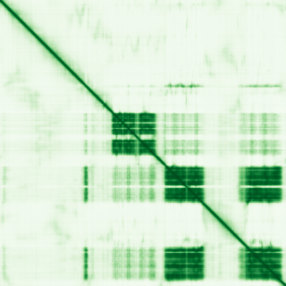
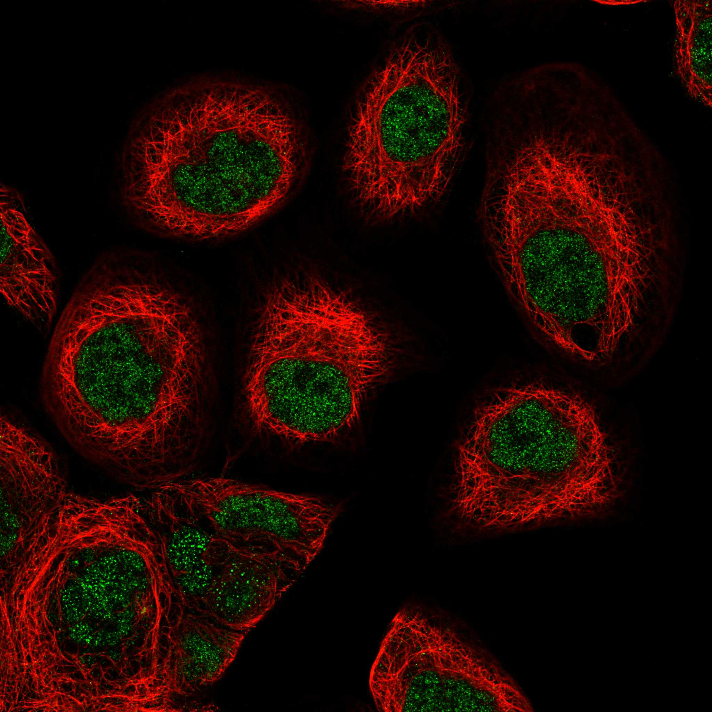

type: protein-evaluation gene: "SENP6" date: 2026-06-01 tags: [protein-scout, nucleoplasm, evaluation] status: scored ---
SENP6 核蛋白评估报告
1. 基本信息
| 项目 | 内容 |
|---|---|
| 基因名 / 别名 | SENP6 / KIAA0797, SSP1, SUSP1 |
| 蛋白全名 | Sentrin-specific protease 6 |
| 蛋白大小 | 1112 aa / 126.1 kDa |
| UniProt ID | Q9GZR1 |
2. 评分总览
| 维度 | 得分 | 新权重 | 加权后 | 关键证据摘要 |
|---|---|---|---|---|
| 核定位特异性 | 5/10 | ×4 | 20.0 | UniProt Nucleus (ECO:0000269)；GO-CC nucleoplasm IDA, cytoplasm/cytosol IBA；HPA Supported, Nucleoplasm (main) + Cytosol |
| 蛋白大小 | 3/10 | ×1 | 3.0 | 1112 aa, 126.1 kDa，大型 SUMO 蛋白酶 |
| 研究新颖性 | 6/10 | ×5 | 30.0 | PubMed strict=58, broad=106 |
| 三维结构 | 3/10 | ×3 | 9.0 | AlphaFold pLDDT 54.7 (pct>90: 20.1%, pct<50: 61.0%)；无 PDB 结构 |

| 调控结构域 | 6/10 | ×2 | 12.0 | Peptidase C48 (PF02902, IPR003653, IPR038765)；SUMO 去修饰酶，调控染色体排列与纺锤体组装 |
| PPI 网络 | 6/10 | ×3 | 18.0 | STRING: SUMO2 (0.967 exp 0.731), SUMO1 (0.95), PRPF19 (0.837 exp)；IntAct 14 条；UniProt 无记录 |
| 加权总分 | 92/180** | |||
| 互证加分 | +0.0 | |||
| 归一化总分 (÷1.83) | 50.3/100** |
3. 详细分析
3.1 核定位证据
| 来源 | 定位 | 可信度 |
|---|---|---|
| UniProt | Nucleus (ECO:0000269 ×2) | 中高 (实验证据) |
| GO-CC | nucleoplasm (IDA:HPA), cytosol (IDA:HPA), cytoplasm (IBA:GO_Central), nucleus (IBA:GO_Central) | 中高 |
| Protein Atlas (IF) | HPA Supported, Nucleoplasm (main) + Cytosol | 中 |
HPA IF 状态: HPA IF 图像已本地嵌入。

结论: SENP6 主要定位于核质 (IDA:HPA)，但同时存在胞质分布 (cytosol IDA:HPA)，核定位特异性仅为中等。SUMO 蛋白酶功能涵盖核-质两部分底物。
3.2 结构与数据源
| 指标 | 数值 |
|---|---|
| AlphaFold | AF-Q9GZR1-F1 |
| 平均 pLDDT | 54.7 |
| pLDDT >90 | 20.1% |
| pLDDT 70-90 | 13.8% |
| pLDDT <50 | 61.0% |
| PDB | 无 |
| InterPro | IPR038765 (Papain-like cysteine peptidase), IPR003653 (Peptidase C48), IPR051947 |
| Pfam | PF02902 (Peptidase C48/Ulp1) |
AlphaFold PAE 状态: PAE 已下载。pLDDT 较低 (54.7)，61.0% 残基 pLDDT <50。该大蛋白 (1112 aa) 存在大量无序区域，仅 N-terminal Peptidase C48 催化域可能有序。无 PDB 实验结构。
3.3 研究现状
| 指标 | 数值 |
|---|---|
| PubMed strict (Title/Abstract) | 58 |
| PubMed broad | 106 |
| 别名 | KIAA0797, SSP1, SUSP1（未用于 scoring） |
关键文献：SENP6 是 poly-SUMO2/3 链特异性去 SUMO 酶，参与染色体排列/纺锤体组装 (CENPH-CENPI-CENPK 复合体调控)、PML 和 CENPI 蛋白稳定性保护 (antagonize RNF4 泛素化)、DNA 修复 (RPA1 desumoylation)。代表性文献：PMID:29321472 (osteochondroprogenitor homeostasis, Nature Communications), PMID:40729740 (mitochondrial protein import via TOM40, Advanced Science), PMID:37059091 (SLX4-driven DNA repair, Molecular Cell)。研究热度中等（strict=58）。
3.4 PPI 网络（三源综合）
| Partner | Source | Score/Evidence | Relevance |
|---|---|---|---|
| SUMO2 | STRING | 0.967 (exp 0.731) | Substrate, poly-SUMO chains |
| SUMO1 | STRING | 0.95 (exp 0.559) | Substrate |
| PRPF19 | STRING+IntAct | 0.837 (exp 0.795), Co-IP (PMID:28514442) | SUMO-related E3 ligase |
| RANGAP1 | STRING | 0.85 (textmining 0.847) | SUMO pathway |
| UBE2I | STRING | 0.749 (exp 0.184) | SUMO E2 |
| SENP3 | STRING | 0.696 (exp 0.295) | SENP family |
| NPM1 | IntAct | BioID (PMID:39251607) | Nucleolar proximity |
| LMNA | IntAct | BioID (PMID:29568061) | Nuclear lamina |
| HNRNPC | IntAct | BioID (PMID:39251607) | Nuclear RNA binding |
PPI 网络围绕 SUMO 信号通路 (SUMO1/2/3, UBE2I, SAE1, UBA2)，含有较多实验验证互作。SENP6 与 SENP3/SENP5 同属 SENP 家族，且 BioID 结果显示其与 NPM1（核仁）、LMNA（核膜）、HNRNPC 等核因子邻近。
4. 总体评价
SENP6 是 poly-SUMO 链特异性蛋白酶，PPI 网络以 SUMO 通路为核心，在染色体排列/纺锤体组装中发挥关键功能。主要不足：分子量极大 (126.1 kDa)，AlphaFold 预测不可靠 (pLDDT 54.7, 61% <50)，无 PDB 实验结构，核定位特异性仅中等 (核-质双分布)。研究热度中等 (PM=58)，SUMO 通路的普遍性降低了该靶标的区分度。
5. 数据来源
- UniProt: https://www.uniprot.org/uniprotkb/Q9GZR1
- AlphaFold: https://alphafold.ebi.ac.uk/entry/Q9GZR1
- PubMed: https://pubmed.ncbi.nlm.nih.gov/?term=SENP6
- Protein Atlas: https://www.proteinatlas.org/ENSG00000112701-SENP6
PAE 图像暂无数据（未生成本地图片或未可靠获取），结构判断基于AlphaFold pLDDT统计。